1 Giới Thiệu Thành phố Huế
Tổng quan
Huế là một trong những thành phố cổ kính và nổi tiếng nhất Việt Nam. Đây từng là kinh đô của triều Nguyễn – triều đại phong kiến cuối cùng của Việt Nam. Huế nổi bật với vẻ đẹp thơ mộng, yên bình cùng nhiều công trình lịch sử và văn hóa đặc sắc.
Vị trí địa lý
Huế nằm ở miền Trung Việt Nam, thuộc tỉnh Thừa Thiên Huế. Thành phố nằm bên dòng sông Hương nổi tiếng và cách:
- Đà Nẵng khoảng 100 km
- Hà Nội khoảng 700 km
- Thành phố Hồ Chí Minh khoảng 1000 km
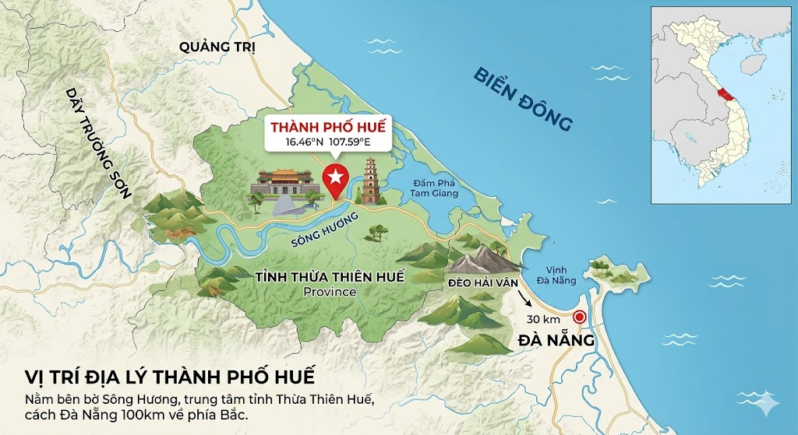
2 Những địa điểm nổi tiếng
Huế là một trong những thành phố nổi tiếng với các địa điểm mang tính chất lịch sử. Các công trình từ thời thời vua Nguyễn dược công nhận là di sản văn hóa, bên cạnh đó Huế cũng có những vẻ đẹp thiên nhiên đến từ sông Hương hay là núi Ngự Bình. Chùa cũng là 1 trong những địa điểm không thể bỏ qua khi đến Huế, với số lượng chùa lớn và đa dạng thì Huế là 1 trong những điểm đến dành cho các tín ngưỡng phật giáo.
Đại nội Huế
Đây là công trình lịch sử nổi bật nhất của Huế, từng là nơi sinh sống và làm việc của các vua triều Nguyễn. Đại Nội mang đậm kiến trúc cung đình cổ kính và đã được UNESCO công nhận là Di sản Văn hóa Thế giới.
Sông Hương
Sông Hương chảy qua trung tâm thành phố, tạo nên vẻ đẹp dịu dàng và thơ mộng cho Huế.
Chùa Thiên Mụ
Ngôi chùa cổ nổi tiếng nằm bên bờ sông Hương, là biểu tượng tâm linh của thành phố Huế.
Lăng Tẩm Các Vua Nguyễn
Huế nổi tiếng với nhiều lăng tẩm đẹp như:
- Lăng Khải Định
- Lăng Minh Mạng
- Lăng Tự Đức
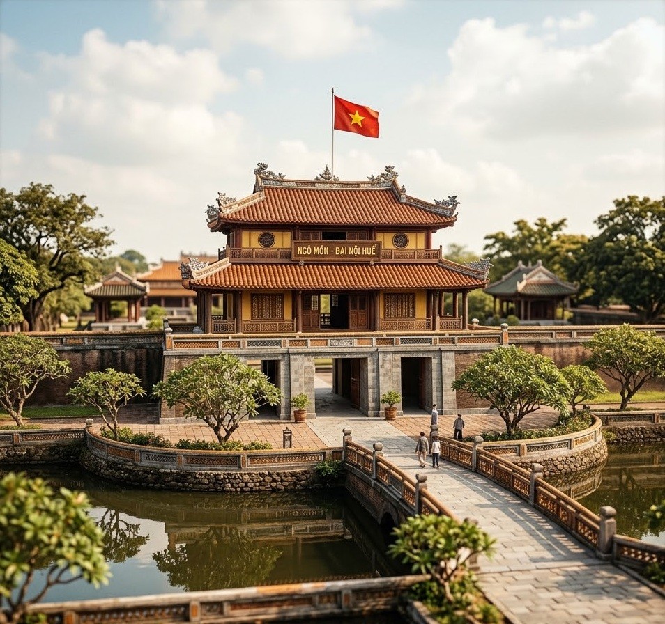
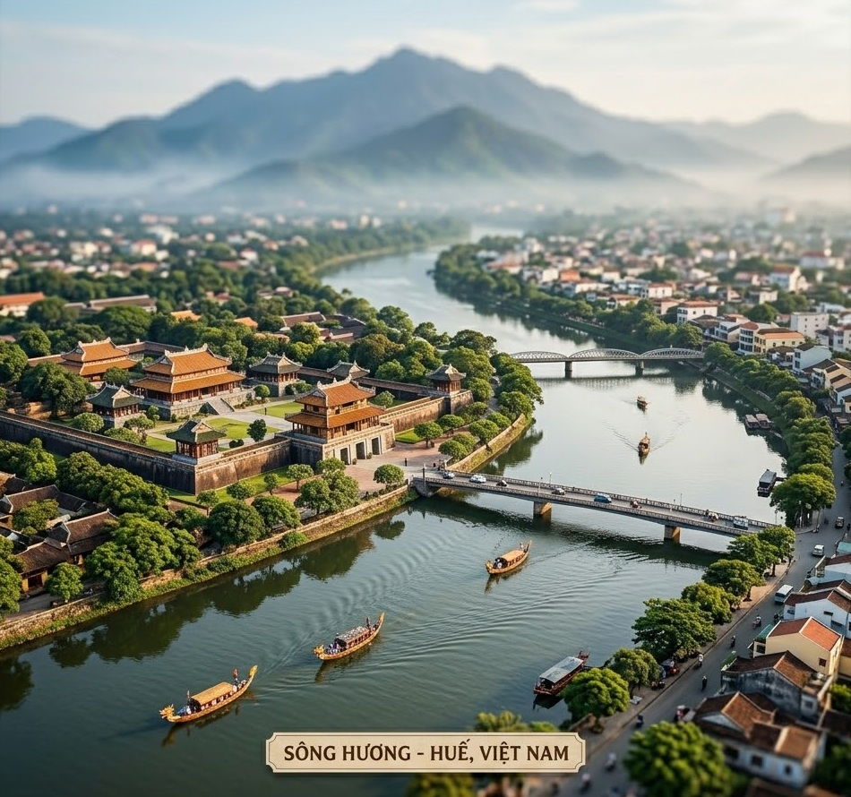
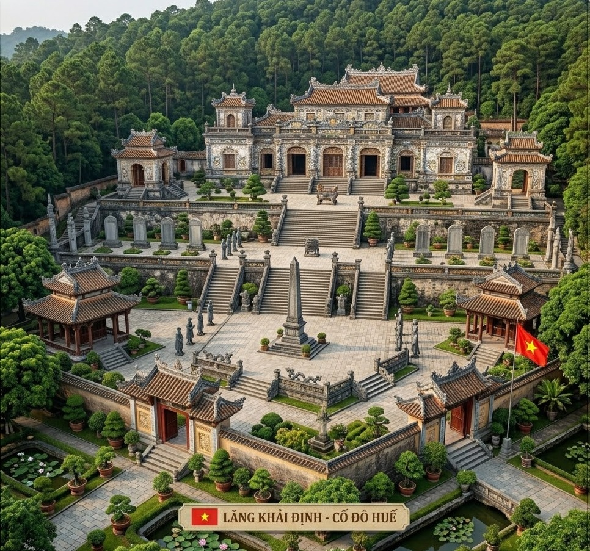
3 Ẩm Thực Huế
Ẩm thực Huế được xem là một trong những nét văn hóa đặc sắc nhất của miền Trung Việt Nam. Các món ăn ở Huế không chỉ ngon mà còn được trình bày rất đẹp mắt và tinh tế. Hương vị thường đậm đà, cay nhẹ và mang phong cách cung đình xưa.
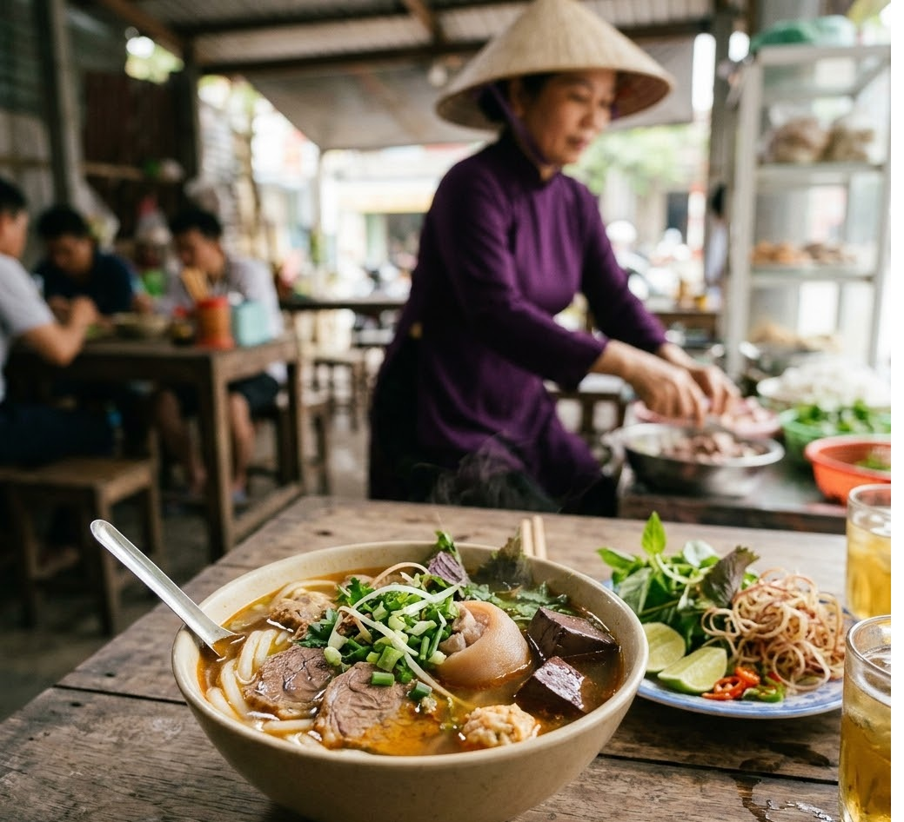
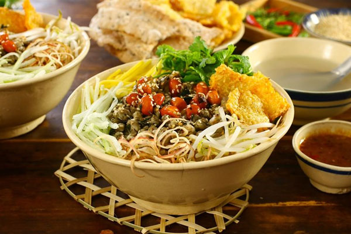
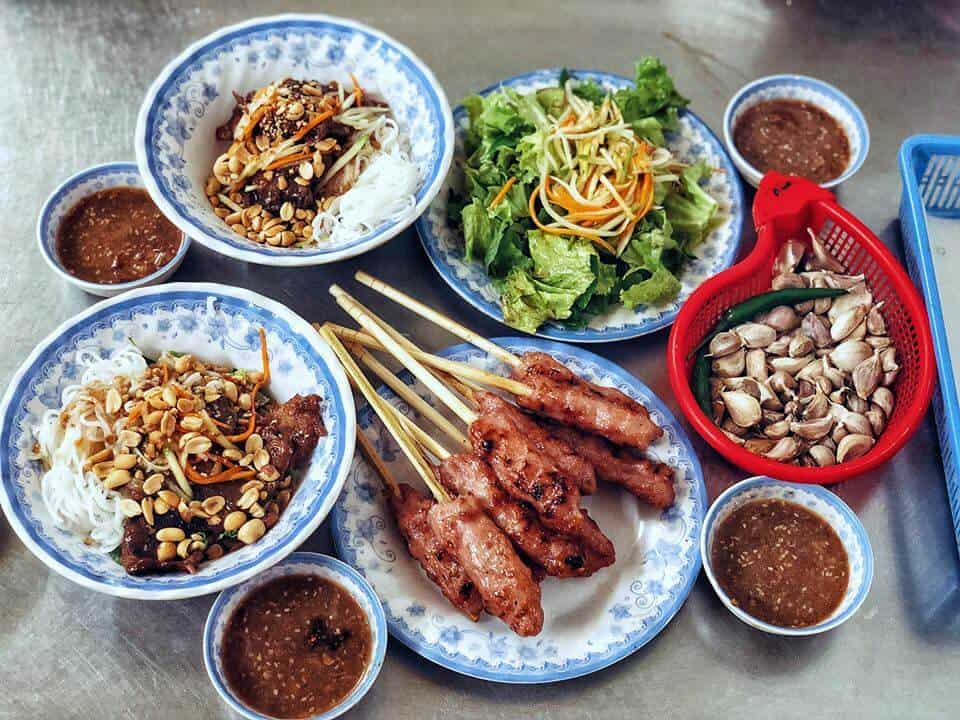
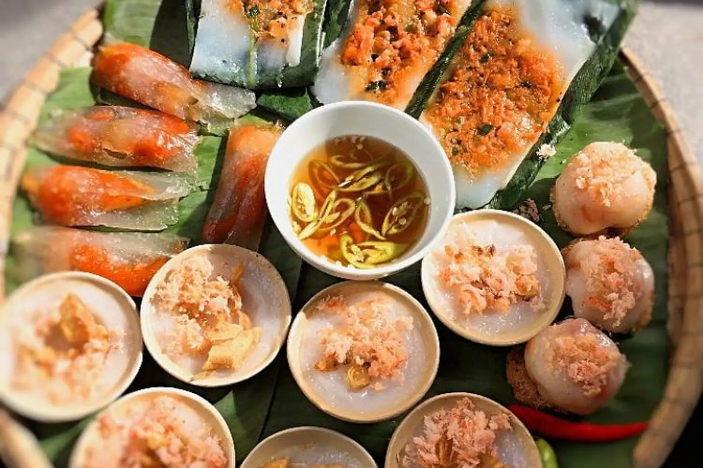
Bún Bò Huế
Bún bò Huế là món ăn nổi tiếng nhất của thành phố Huế. Món ăn này có nước dùng đậm đà được ninh từ xương bò kết hợp với hương thơm đặc trưng của sả và mắm ruốc. Bún bò Huế thường được ăn cùng thịt bò, giò heo và rau sống, tạo nên hương vị rất hấp dẫn.
Cơm Hến
Cơm hến là món ăn dân dã đặc trưng của người Huế. Món ăn gồm cơm nguội ăn kèm với hến xào, đậu phộng, rau thơm, tóp mỡ và nước hến nóng. Tuy đơn giản nhưng cơm hến mang hương vị rất riêng và được nhiều du khách yêu thích.
Bánh Bèo
Bánh bèo Huế là loại bánh nhỏ được làm từ bột gạo hấp chín trong chén nhỏ. Bên trên thường có tôm cháy, hành phi và nước mắm ngọt. Đây là món ăn nhẹ phổ biến và thể hiện sự tinh tế trong ẩm thực Huế.
Nem Lụi
Nem lụi là món ăn được làm từ thịt heo xay nhuyễn, tẩm gia vị rồi nướng trên que sả hoặc que tre. Khi ăn, nem lụi thường được cuốn với bánh tráng, rau sống và chấm cùng nước sốt đậu phộng đặc biệt, tạo nên hương vị thơm ngon khó quên.
Đặc biệt, bún bò Huế là món ăn nổi tiếng trên khắp Việt Nam với nước dùng thơm ngon, vị cay đặc trưng và thịt bò mềm. Ngoài ra, các loại bánh truyền thống của Huế cũng rất được du khách yêu thích bởi hương vị dân dã nhưng hấp dẫn.
Khi đến Huế, du khách có thể dễ dàng tìm thấy những quán ăn ven đường, khu chợ truyền thống hoặc nhà hàng mang phong cách cung đình để thưởng thức ẩm thực địa phương.
3 Văn Hóa Và Con Người
Người Huế nổi tiếng nhẹ nhàng, lịch sự và hiếu khách. Thành phố còn lưu giữ nhiều nét văn hóa truyền thống
Nhã Nhạc Cung Đình Huế
Nhã nhạc cung đình Huế là loại hình âm nhạc truyền thống được biểu diễn trong các nghi lễ của triều Nguyễn. Đây là một nét văn hóa đặc sắc của Huế và đã được UNESCO công nhận là Di sản Văn hóa Phi vật thể của nhân loại. Nhã nhạc mang âm hưởng trang trọng, nhẹ nhàng và thể hiện vẻ đẹp của văn hóa cung đình xưa.
Festival Huế
Festival Huế là lễ hội văn hóa lớn được tổ chức định kỳ tại thành phố Huế. Trong lễ hội có nhiều hoạt động như biểu diễn nghệ thuật, diễu hành, trình diễn áo dài và các chương trình văn hóa truyền thống. Festival Huế thu hút rất nhiều du khách trong và ngoài nước.
Áo Dài Huế
Áo dài Huế nổi tiếng với vẻ đẹp thanh lịch và dịu dàng. Người con gái Huế khi mặc áo dài thường mang nét đẹp nhẹ nhàng, truyền thống và rất đặc trưng của miền Trung Việt Nam. Áo dài cũng là hình ảnh quen thuộc trong các trường học và lễ hội ở Huế.
Làng Nghề Truyền Thống
Huế có nhiều làng nghề truyền thống nổi tiếng mang đậm nét văn hóa địa phương. Trong đó, làng hương Thủy Xuân là điểm đến được nhiều du khách yêu thích với những bó hương đầy màu sắc được trưng bày đẹp mắt. Ngoài ra, Huế còn có các làng nghề như làm nón lá, làm tranh và đúc đồng, góp phần gìn giữ giá trị văn hóa truyền thống của cố đô.
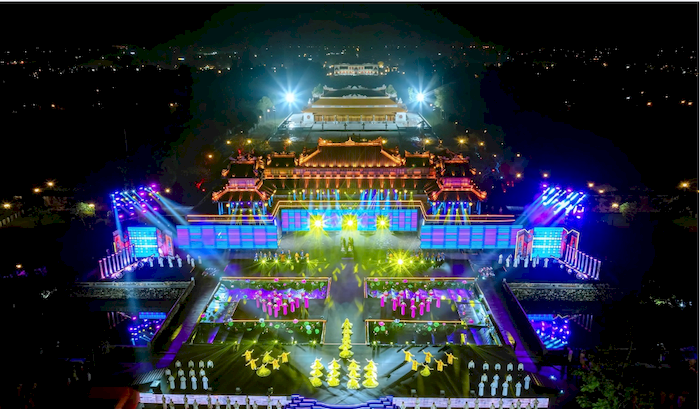
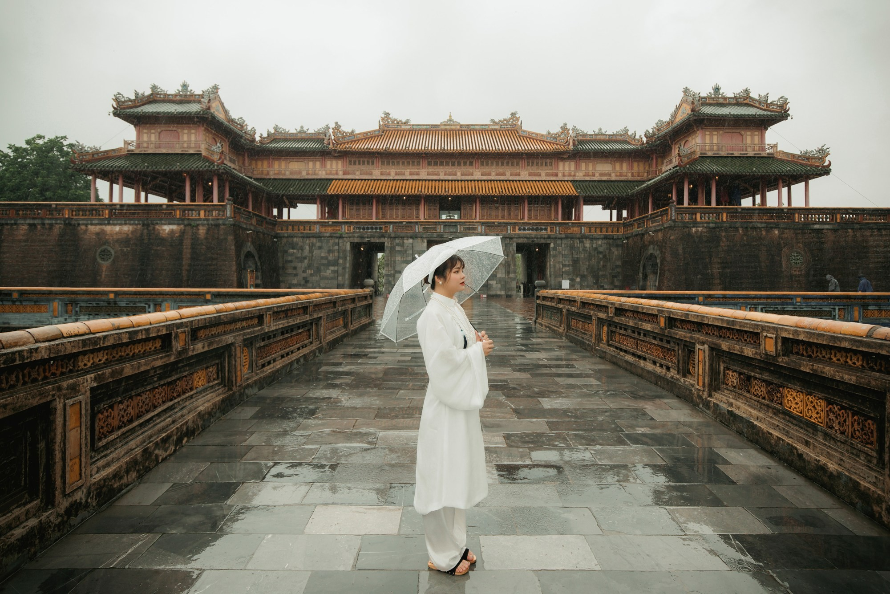
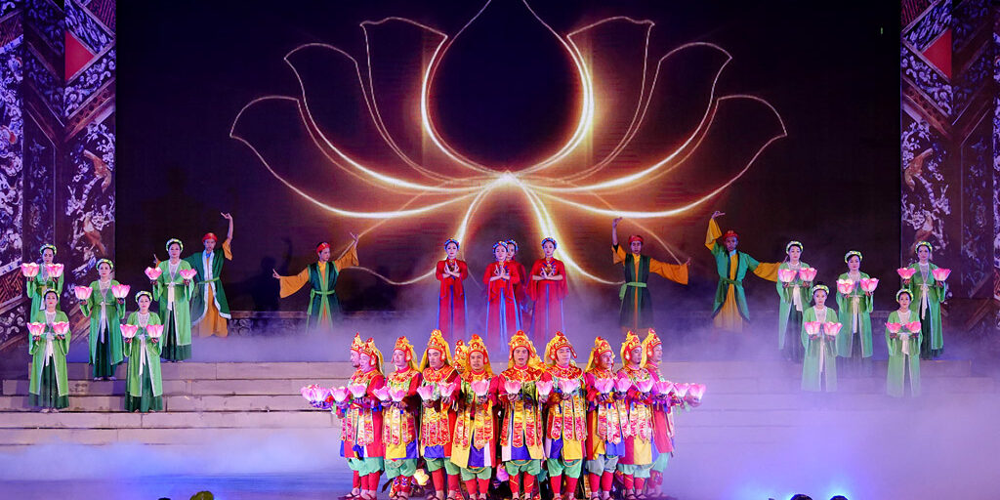
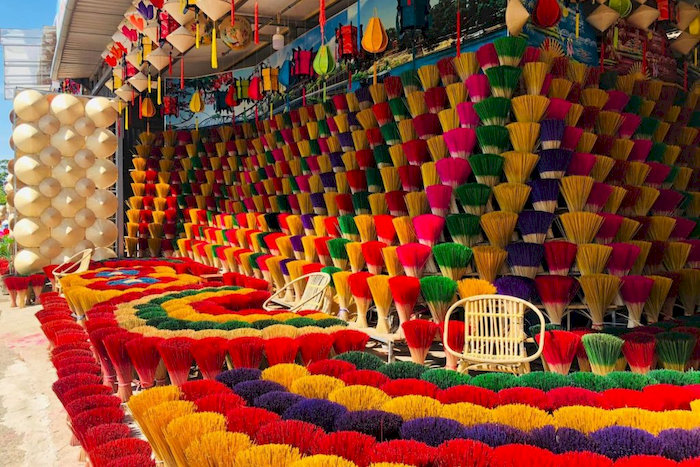
4 Kết Luận
Huế là điểm đến lý tưởng cho những ai yêu thích lịch sử, văn hóa và sự yên bình. Với vẻ đẹp cổ kính, ẩm thực hấp dẫn và con người thân thiện, Huế luôn để lại nhiều ấn tượng đẹp trong lòng du khách. Thời gian thích hợp để du lịch Huế là từ tháng 1 đến tháng 4 khi thời tiết mát mẻ và ít mưa.
COMMENT(3)
NICKNAME 1
Ở xa với bận đi làm quá. Kh biết đến bao giờ mới có dịp ghé Huế 1 lần nhỉ. HUHU
NICKNAME 2
Đồ ăn trong ngon thế nhỉ. Với 1 người tín đồ ăn uống như mình kh đi thì hơi phí
NICKNAME 3
Nhìn bài viết đã thích đi rồi. có dịp nhất định sẽ ghé Huế 1 lần nè